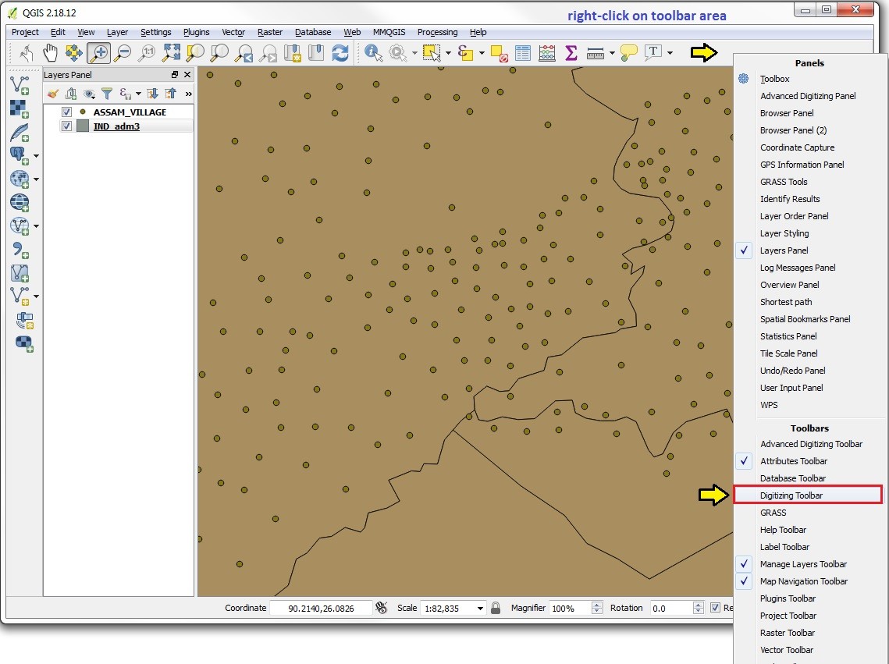
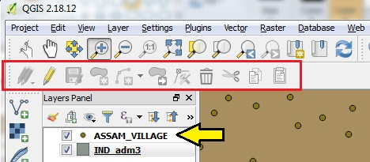
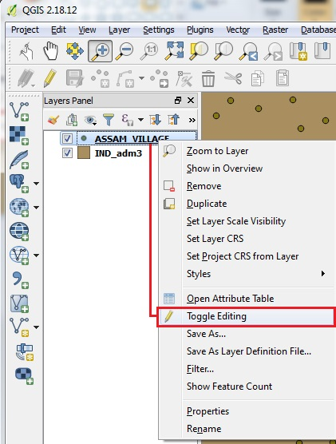
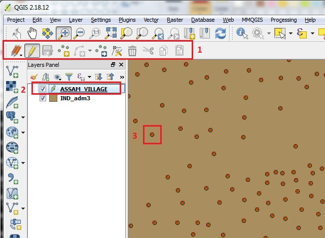
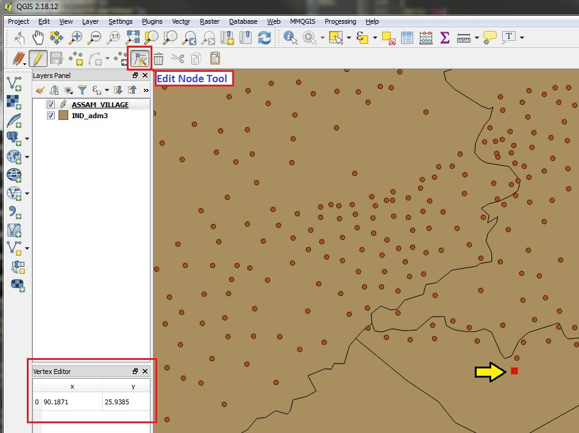
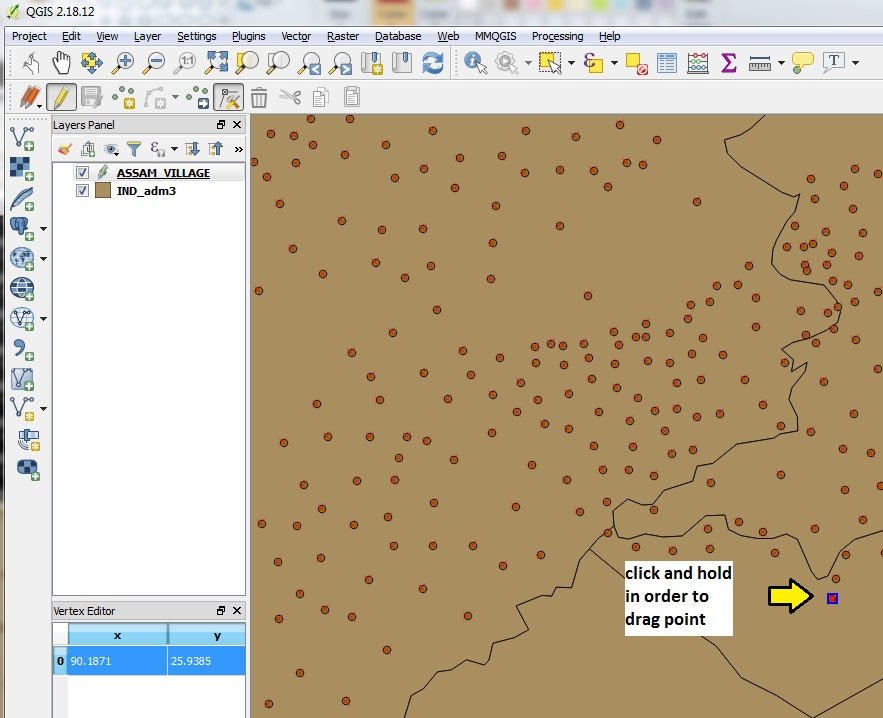
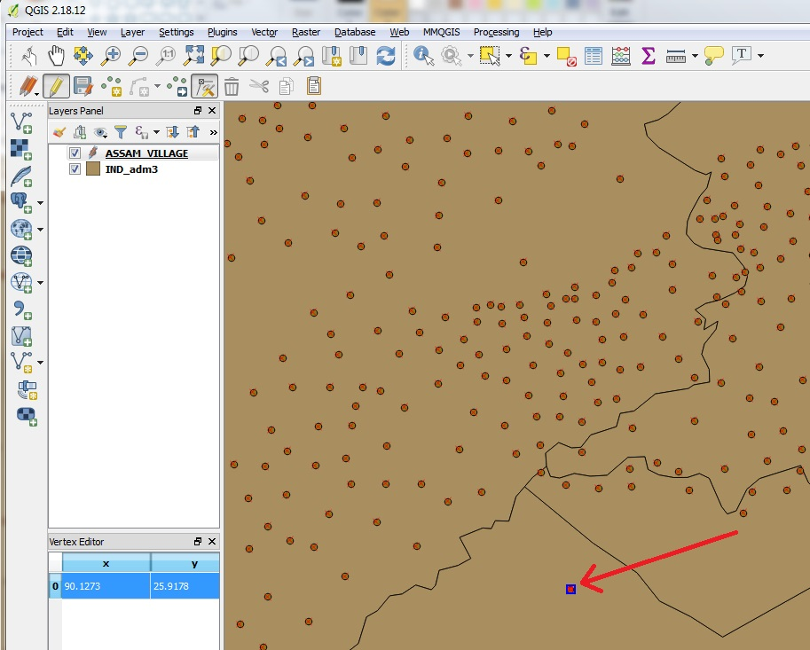
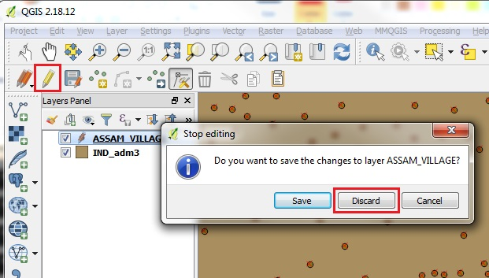

Edit Vector Points Layer
- Right-click on empty part of Toolbar Area
- Mouse down to CLICK on the Digitizing Toolbar

The Digitizing Tools will be GRAYED OUT until a layer is selected and is Editable

You can use any point layer and polygon layer for this exercise.
- First click on a POINTS layer in the Layers Panel to make it ACTIVE
- Then right click on the Layer and scroll down to TOGGLE EDITING

- Now the Tools will be Clickable on the Digitizing Toolbar
- The Layer in the Layers Panel will have an EDITABLE icon
- Each Editable VERTEX will have a small RED X over it, indicating that it is possible to edit

- To begin editing POINTS, click on the EDIT NODE TOOL within the Digitizing Toolbar
- Move the cursor over the POINT that you wish to edit and click on it
- The point and "editable" RED X will turn into a RED SQUARE, which means the specific vertex, or node, is now engaged to be edited, or moved to a new position
- Also note, a VERTEX EDITOR panel will appear when you have selected a vertex to EDIT, with the current x, y value of the vertex in the current Projection

- Click and HOLD on the POINT
- The POINT will turn BLUE when it is engaged to be dragged to a new location
- The Vertex Editor Panel will highlight the currently engaged Vertex

- Drag the point to the desired location and release the CLICK of the mouse
- The POINT will relocate to the new location
- The POINT will still be BLUE (as a temporary edit) until you click on another vertex to be edited
- Note that the X, Y coordinates in the Vertex Editor Panel will now be UPDATED to those of the new location

- Before continuing, you can ROLL BACK this edit by pressing both ctl-Z (both the CONTROL and the Z keys at the same time)
- If you click ctl-Z, the POINT will revert back to its original position, and the X, Y values in the Vertex Editor will also be rolled back
- Note that by using ctl-Z, the POINT will no longer be BLUE, but will roll back to the state of the RED X, meaning that the point is selectable and can be edited, but is not clicked on and engaged for moving, nor has it been moved to a new location
- You can END the editing session at any time by CLICKING on the EDIT TOOL (the single Pencil icon)
- If you have made any changes, you will be prompted as to whether these should be SAVED or DISCARDED
- Clicking DISCARD will end the EDIT session and leave the active layer unchanged

If you are sure that the new edits are correct, click SAVE, which will OVERWRITE the layer with the newly edited version. You will NOT be able to roll back, after SAVING the edits!
One method to control your editing process, is to SAVE A NEW version of the layer that will be edited, with a serial number or Timestamp in the filename. By creating new files for each editing session, you can revert to previous versions in case of some emergency need to roll back.

Proceed to Vector Polygon Editing Instructions